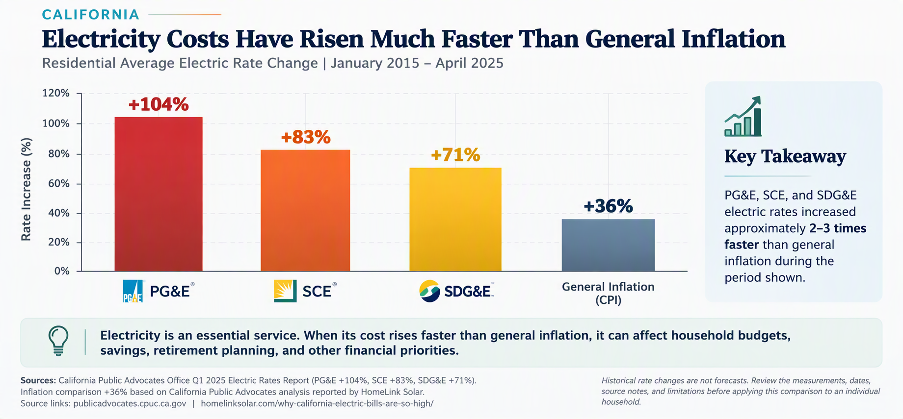
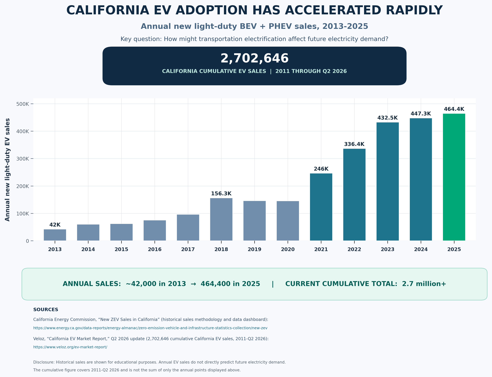
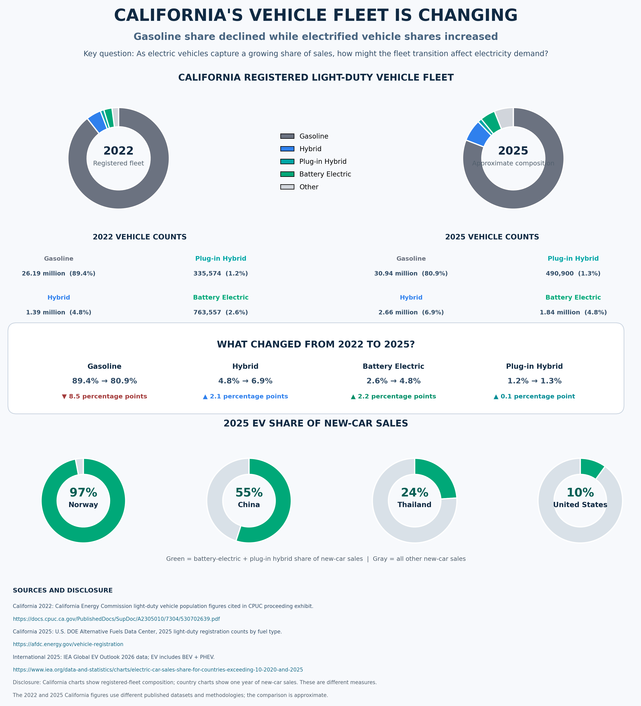
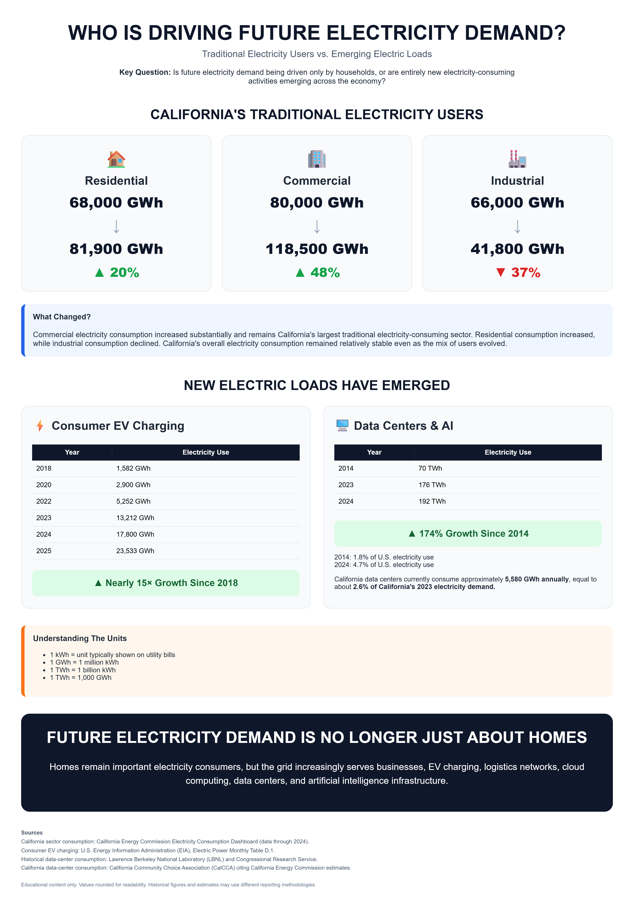

01
The big picture
What Drives Electricity Costs?
The complete picture is more complex than one company choosing a price. Electricity must be ready before a switch is flipped.
Growing and changing energy demand
California's electric system must serve established household and business use while adapting to new categories of demand. Timing, location and concentration can determine whether generation, substations, transformers, feeders, transmission, storage, controls or local distribution capacity must expand.
Aging infrastructure
Poles, cables, transformers, switches, substations, protection systems and communications equipment require inspection, maintenance, modernization and replacement. The shared network must still be maintained even when an individual household conserves.
Wildfire prevention and system hardening
Inspection, vegetation management, hardening, selected undergrounding, emergency work and rebuilding serve public safety and require labor, equipment, materials, technology, planning, oversight and capital.
Renewable-energy transition, transmission and storage
A changing generation mix can require transmission, storage, flexible demand, reserve resources, interconnection work, forecasting, communications and different operating practices.
Reliability requirements
Reliability means having enough supply and functioning infrastructure under ordinary conditions and during heat, wildfire, drought, failures or constrained imports. The system must be prepared for the difficult hour, not only the average hour.
The part homeowners cannot control
Using Less Electricity Can Lower Usage. It Does Not Lock the Price You Pay.
Your household controls how much electricity it uses. It does not control the future price, charges, or rate structure applied to the electricity it still needs from the grid.
Conservation can lower the number of kilowatt-hours you buy. It cannot guarantee what those kilowatt-hours will cost later.02
Historical perspective
California Electricity Costs Have Risen Faster Than General Inflation
Historical change is not a forecast. It shows what occurred during the chart's stated period.

Residential Electric Rate Change vs. General InflationOpen the chart, context and limitations.
The household question
If an essential recurring cost rises faster than general inflation for an extended period, how could that affect savings, retirement planning and other household priorities?
The chart does not represent every customer's bill or predict future prices.
03
A changing California
Electricity Is Becoming More Important
A generation ago, electricity primarily powered lights and appliances. Today it increasingly supports transportation, comfort, work, connectivity, security and digital services.

California EV adoption has acceleratedOpen the evidence and limits.
Annual vehicle sales show adoption activity. They do not directly measure charging time, grid location or total electricity demand.

California's vehicle fleet is changingOpen the evidence and definitions.
New-car sales share and total registered-fleet composition are different measurements.

Who is driving future electricity demand?Open the evidence and measurement cautions.
The grid increasingly serves transportation, logistics, computing, data centers and other emerging loads. Different datasets should not be treated as directly additive.
04
Your household
The Cost of Electricity Affects More Than Electricity
When an essential recurring expense rises, it competes with other uses of income.
Retirement & Fixed Income
Recurring energy costs can consume a larger share of carefully planned income.
Working & Young Families
Utility costs compete with transportation, groceries, education, savings and family priorities.
Homeowners & Renters
Electricity costs affect comfort, affordability and financial flexibility.
Small Businesses
Electricity can influence operating costs, pricing, hiring and investment.
A real question
Do I want to remain completely exposed to future electricity costs, or do I want some level of control over them?
The cost of not changing is not one predictable number. It is continued exposure to future electricity purchases, prices and rate structures while electricity becomes increasingly important to daily life.
Better Information
Use verifiable sources, explain measurements, separate history from estimates or projections, and disclose limitations.
Better Questions
Ask what a number includes, who produced it, how it was calculated and whether it matches the complete household experience.
Better Decisions
Respect that every household is different. Information should expand thoughtful choices, not pressure everyone into one answer.
What the movement stands for
- Independent thinking rather than blind trust.
- Plain-language explanations rather than technical fog.
- Complete cost rather than one attractive number.
- Questioning both utility-industry and energy-industry claims.
- Sharing useful information with family, neighbors and the community.
What the movement does not stand for
- Fear-based predictions.
- Utility bashing or political blame.
- Assuming every forecast will happen exactly as modeled.
- Telling every person to make the same decision.
- Selecting facts only because they support a preferred conclusion.
The closing thought
The Goal Is Not Fear. The Goal Is Foresight.
No chart can tell anyone exactly what electricity will cost in 10 or 20 years. History can show what has changed. Current adoption and consumption patterns can show how electricity's role is expanding. Each household can then decide whether continuing without a long-term energy-cost plan is a risk it is comfortable accepting.
The question is no longer only:“How much is my electric bill 5 years from now?”The larger question may be:“How will electricity affect my household finances over the next 5 to 10 years?”
Better information. Better questions. Better decisions.
Sources & Methodology
How to Read the Visual Evidence on This Page
The charts answer different questions and do not all use the same units, geography, dates or methodology.
Minimum requirements for every chart
- Clear title, geography and time period.
- Plain-language units and readable labels.
- Visible distinction between historical, preliminary, estimated and projected values.
- Source, date, methodology and important limitations.
- Alternative text for accessibility.
Editorial standard
This page should never select a number because it creates the strongest reaction. It should use the measurement that best answers the stated question and explain what that measurement does and does not represent.